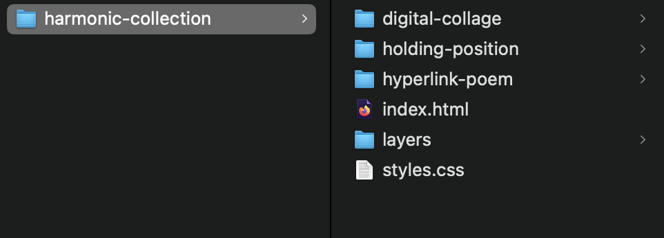

Core 1: Interaction
Week 6, Oct 7
Internet Walk (jisoo & Emigdio)
Short Lecture, Design is a Love Letter not a Cover Letter
Class activity and midterm 1-1s
Homework (due next week)
Fix/fine-tune your past homeworks as needed (remember you can also look at past class slides here)
Build out your Harmonic Collection portfolio website that will house your projects.
You will build a container website that will house all of your projects in this class and that introduces viewers to your Harmonic Collection theme. Your folder structure should look like this with your projects being in subfolders inside your harmonic-collection website which has its own index.html and styles.css:
Your Harmonic Collection page needs to contain at least a one paragraph introduction describing your theme and your projects. Think of it this way, someone visiting your Harmonic Collection website for the first time should have an understanding of what this is. Check out past examples for inspiration.
Past Projects:
- Drithi's Inferno
- Kirti's Camera Roll
- Sher - Wordle
- Familiarity
- The Mediterranean
- Communion
- Dance Class
- Printed Matters
- Solo Munching
Internet Walk: next week Nandu will share a website.